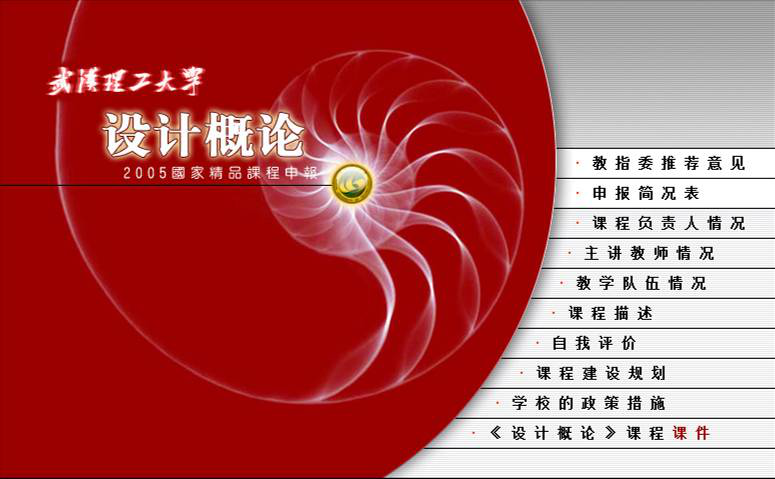
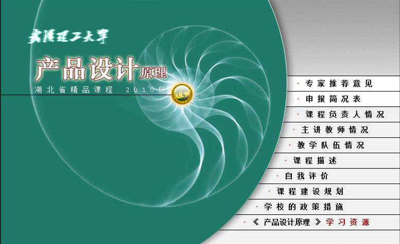
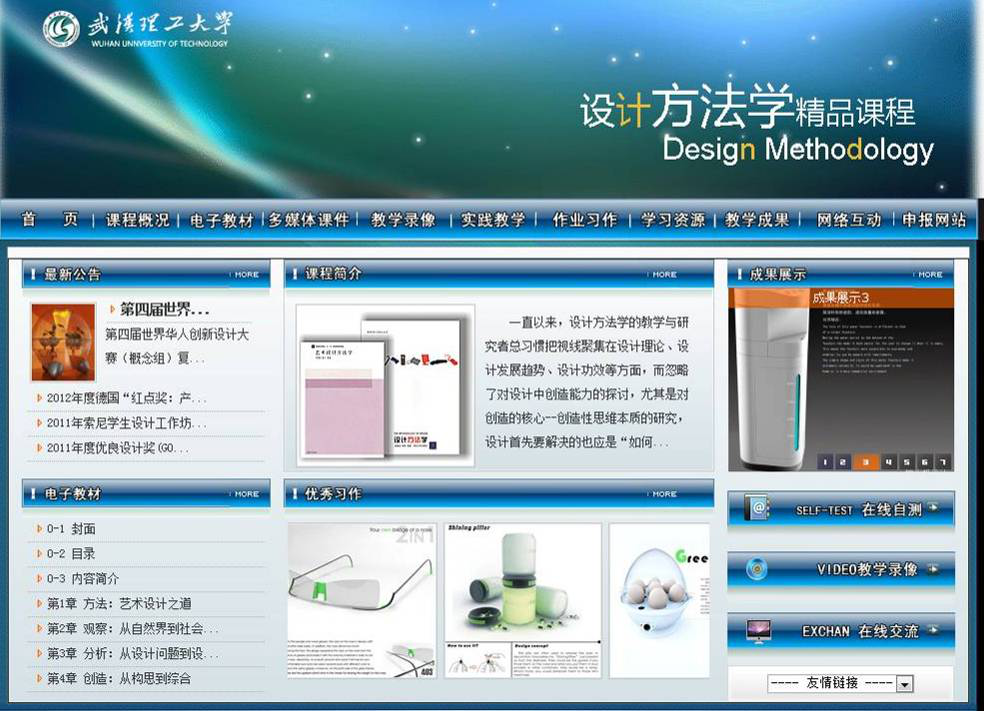

当前位置： 首页>> 体系构建 > 课程建设> 省级以上精品课程与在线课程建设情况
当前位置： 首页>> 体系构建 > 课程建设> 省级以上精品课程与在线课程建设情况
省级以上精品课程与在线课程建设情况
发布时间：2018-04-26 13:47:44 浏览次数：
序号 | 课程建设 | 负责人/参加人 | 级别 | 时间 | 备注 | |
1 | 设计概论 | 吕杰锋 | 国家级精品课程、国家精品资源共享课 | 2005/2013 | 已上线 | |
2 | 计算机艺术设计基础 | 方兴、徐进波 | 省级精品课程 | 2009 | 已上线 | |
3 | 设计方法学 | 郑建启、汤军 | 省级精品课程 | 2011 | 已上线 | |
4 | 产品设计原理 | 吕杰锋 | 省级精品课程 | 2007 | 已上线 | |
5 | 产品开发设计 | 汤军 | 全国工程硕士专业学位研究生教育在线课程 | 2016 | 在建中 | |
6 | 设计学原理 | 吕杰锋 | 全国工程硕士专业学位研究生教育在线课程 | 2016 | 在建中 | |
7 | 艺术设计概论 | 吕杰锋 | 校级在线课程 | 2016 | 在建中 | |
8 | 造型设计基础 | 汤军 | 校级在线课程 | 2017 | 在建中 | |
9 | 设计材料工艺学 | 黄雪飞 | 校级在线课程 | 2017 | 在建中 | |
10 | 设计方法学 | 李翔 | 校级在线课程 | 2017 | 在建中 | |
11 | 新媒体艺术 | 罗颖 | 校级在线课程 | 2016 | 已上线 | |
12 | 用户研究与可用性设计 | 郑杨硕 | 校级在线课程 | 2016 | 已上线 | |
13 | 界面设计 | 吴旭敏 | 校级在线课程 | 2016 | 已上线 | |
14 | 构成原理（下） | 陆江艳 | 校级在线课程 | 2016 | 在建中 | |
15 | 设计市场学 | 郑刚强 | 校级在线课程 | 2016 | 在建中 | |
16 | 游艇设计 | 郑刚强 | 校级在线课程 | 2017 | 在建中 | |
17 | 产品系统设计 | 郑刚强 | 校级在线课程 | 2017 | 在建中 | |
18 | 人机工程学 | 吕杰锋 | 校级在线课程 | 2016 | 在建中 | |
19 | 汽车内饰设计 | 李卓 | 校级在线课程 | 2016 | 在建中 | |
20 | 汽车造型设计 | 李卓 | 双语教学课程 | 2016 | 在建中 |
  